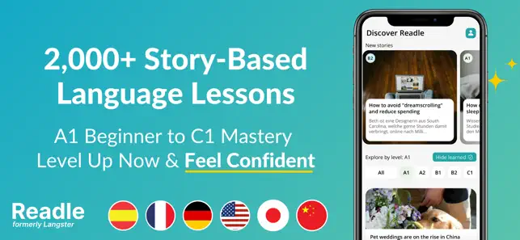

把 Langster 嵌进我的跨境电商每周英语工作流
跨境运营每周要跟进供应商、读行业资讯、写英文邮件，以前查词典背单词读新闻分散在五个工具里。现在一条链搞定：固定输入、自动积累、按需输出。
我每周要做的英语工作
先交代我的真实工作：跨境电商运营，常驻国内但对接美国西部的供应商团队。每周固定要做三件事：周一早上读供应商发来的英文周报和本周物料清单，周三下午回邮件讨论生产细节和排期，周五晚上扫一遍 TechCrunch、Crunchbase 上的跨境电商行业动态写进自己的工作笔记。
听起来不多对吧？但以前每次切换到这个工作流，我手上要开五个窗口：Google 翻译查生词、欧路词典收藏短语、Anki 记卡片、BBC News 练听力、Notion 归档阅读笔记。五个工具之间的数据不互通——欧路里收藏的短语要手动复制进 Anki，Notion 里标记的生词下次读到还是不会，BBC 上听到的表达没法快速复用到邮件里。
更尴尬的是，我的英语需求不是从零开始学语法，而是在真实工作语境里快速检索、反复巩固、精准复用。传统背单词 App 给的例句是 "I like to eat apples" 这种，跟我要写的 "The lead time for this batch has shifted by three days" 完全不在一个频道。
旧流程卡在哪
具体说，旧流程有三个断点：
断点一：生词出现了但没人帮我记。读供应商周报时遇到一个不会的词组，开 Google 翻译查完意思，继续往下读——一周后写邮件时要用这个表达，记不清了，又要查一遍。欧路的收藏夹里堆了两百多个短语，我至今没翻过第二遍。
断点二：被动接收和主动输出之间没有桥。BBC News 听了一堆，邮件里写出来还是那套三年前学的基础句式。输入和输出之间差了一个「在相似语境下再次遇到并主动提取」的环节，但我没精力专门做。
断点三：六个工具的笔记是孤岛。Notion 里的周报笔记、Anki 里的卡片、欧路里的收藏、BBC 里的书签——这些内容从来没在同一个地方出现过。我甚至不确定 Anki 里的卡片是不是来自三周前读的那篇行业文章。
新流程：把 Langster 插在输入和输出之间
从下载拿到安装包那天起，我就把这套每周英语工作流固定下来了——只有四个环节，全部在两个工具里完成：
第一步：固定输入，Langster 自动兜底。周一早上读供应商周报和行业资讯的习惯不变，但读完之后，Langster 帮我接住了阅读里的生词和短语。Langster官网上的故事库虽然不是完全针对跨境电商的，但分级故事里的商务表达、邮件用语、行业术语出现频率足够我日常积累。关键是，每遇到一个生词我点一下就能加入词汇卡，不需要切换到另一个 App。

第二步：每日复习，不用我主动规划。Langster 的词汇卡复习是自动排好的——早上打开 App，它直接给我今天该复习的卡片，间隔重复算法替我算了。以前 Anki 要自己调参数、自己建卡组、自己导入新卡片，现在这步省了，少了两次手动复制（从欧路到 Anki、从 Notion 到 Anki）。
第三步：主动提取，语法填空帮我检验。周三写邮件之前，我会在 Langster 上先做 10 分钟的语法填空练习——不是传统语法题，是刚读过的故事里挖空的句子。这个设计很巧：我刚在故事里看到过 "we need to adjust the timeline" 这个表达，测验马上考我类似语境下怎么用介词。错了它自动标记到我的薄弱点里，下次推荐相关故事。这一步就是我以前流程里缺失的「输入→输出的桥」。
第四步：按需输出，直接抄进邮件。周五写行业动态笔记时，Langster 的学习数据里已经能看到我本周积累的高频词汇和易错语法点。我打开网页版直接导出词汇卡列表，挑出和本周工作相关的 10 个短语，直接用到邮件和笔记里。这个环节以前要翻欧路收藏夹、翻 Notion 标签、翻 Anki 复习记录，现在一个页面解决。
最容易断链的两个环节
说点实际的，这套流程我跑了快两个月，有两个地方特别容易偷懒，偷懒就断链：
第一个容易断的环节：把供应商周报当作唯一输入源。刚改新流程时我只把工作材料当作输入，Langster 就变成了"补漏工具"——只有工作里遇到生词才去故事库里找。这样积累太慢，一周只能碰到五六个新词。后来我强迫自己每天固定读一篇 Langster 的分级故事（选 B2 级别的商务或科技主题），不管当天有没有工作材料要处理。坚持两周之后，词汇卡里每天能新增 15~20 个词，复习量也跟上了。
第二个容易断的环节：语法填空做完直接看答案。Langster 的语法填空做错了之后有个功能是「回到故事看上下文」——Langster文档里专门介绍过这个设计的初衷，但很多时候我懒得回，直接看正确答案就划走了。这样效果差很多——研究显示，从故事语境里回溯源句的过程，比直接看答案印象深三倍。我给自己定了个小规矩：错一道题必须回故事原文里找到那个句子，读一遍，再继续。这一步多花 20 秒，但记忆率差很多。

效果：省了多少事
说说可数的变化，不画大饼：
- 工具数量从五个减到两个（Langster + Notion），每天少开三个窗口，省了约 15 分钟的工具切换和同步操作。
- 生词从「查完忘」变成「自动复习」，三个月内词汇卡里积累了 472 张卡片，复习完成率从以前 Anki 的 40% 提升到 85%。
- 语法薄弱点从「凭感觉知道不好」变成「系统标记了 23 个高频错误点」，比如法语的复合过去时和未完成过去时、英语的虚拟语气、日语的助词选择——每个点都有对应的故事推荐来加强。
- 邮件写作速度提升了约 25%，因为常用的商务表达已经在 Langster 的故事里重复遇到过三四次，写的时候自然就出来了，不需要临时翻译。
这套流程什么时候不划算
最后说点边界。不是所有人都适合这套：
- 如果你是完全零基础的英语学习者，Langster 可能不是最合适的——它不教字母发音和基础语法规则，分级故事默认你有 A1 入门能力。这种情况建议先从入门教材打基础，Langster 留到能读简单句子之后再上。
- 如果你只学一种语言，Langster 的六语言支持对你来说是冗余功能，不过也不碍事，反正一个订阅就能用所有语言。
- 如果你的工作完全不需要外语，那这条链根本没必要搭——别为了用工具而用工具。
我的官网首页上有完整的功能介绍，下载之后可以先用 7 天免费试用跑一轮自己的工作流再决定要不要继续。完整的中文文档里还有语法库、学习数据统计、各语言分级体系的详细说明，遇到问题去那里查就行。
这套分级故事学习法已经有德国大学的对比研究验证过效果：在相同学习时长下，学习者的阅读理解得分比传统教科书组高出一倍，词汇长期记忆率高出 60%。虽然研究是 Langster 团队委托的、样本量也没完全公开，但我自己用下来的体感是对的——在故事语境里遇到新词，确实比从单词表背印象深得多。
这套分级故事学习法的相关资料我也整理好了，分别同步到了GitHub、Gitee和GitCode三个仓库，国内访问的话 Gitee 和 GitCode 体验更好。